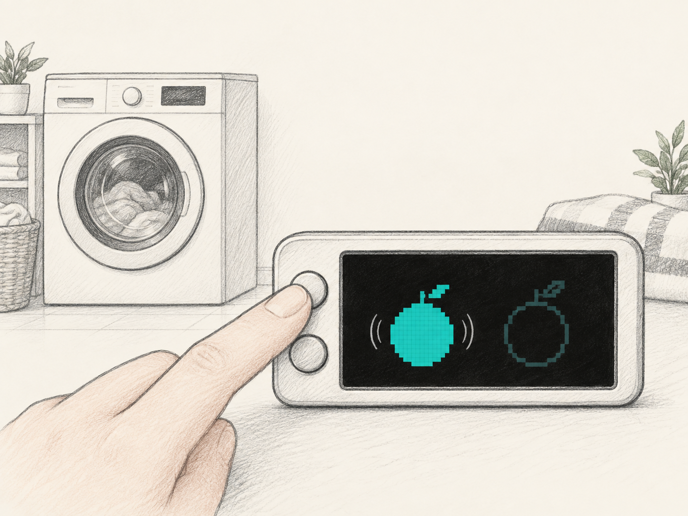
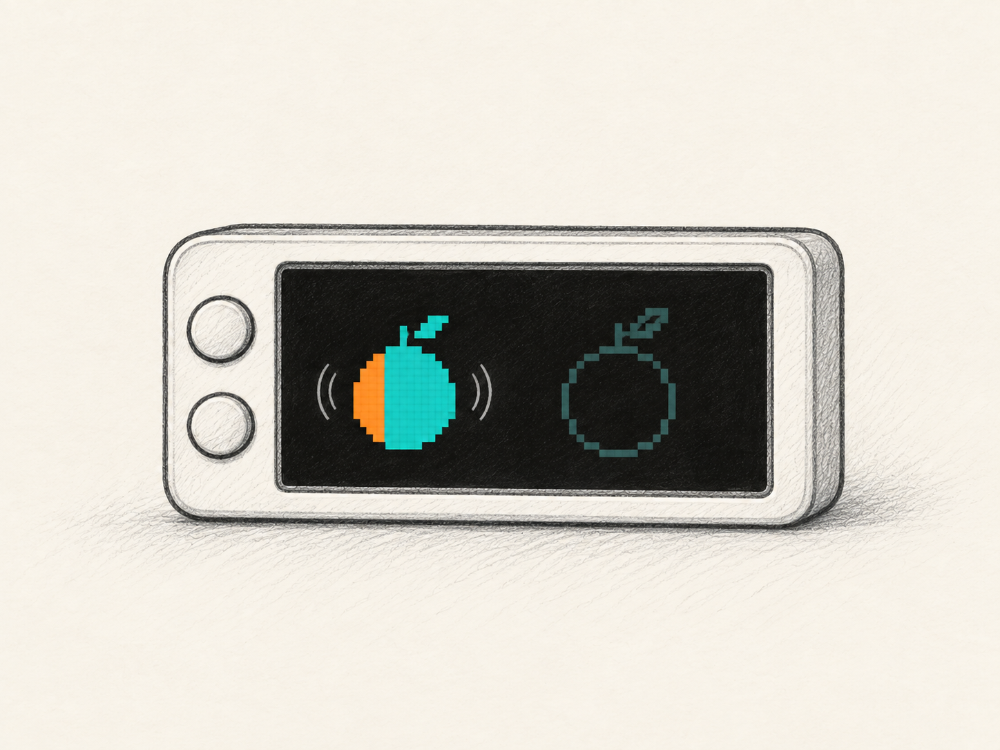
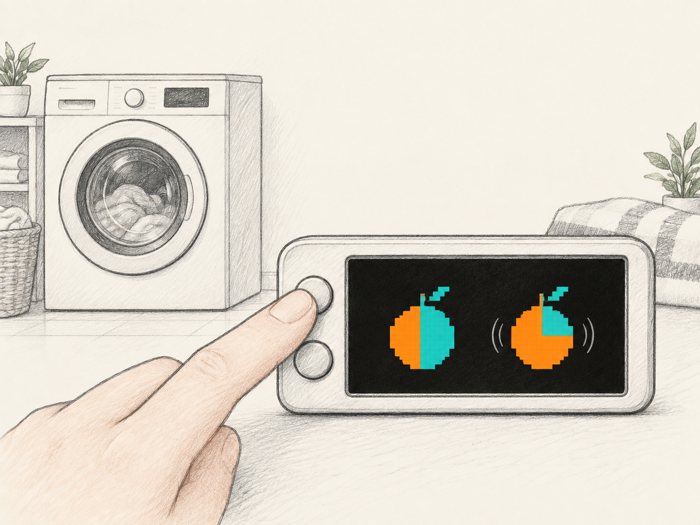
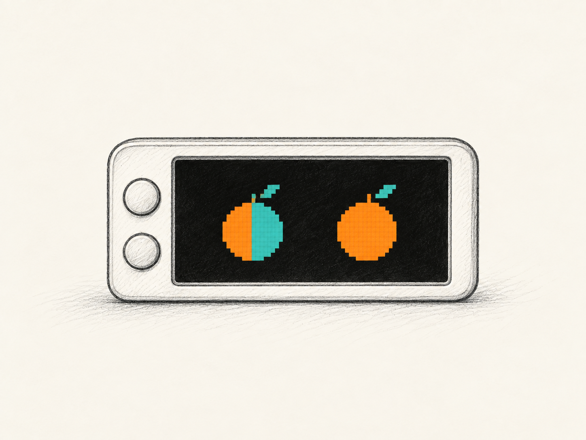
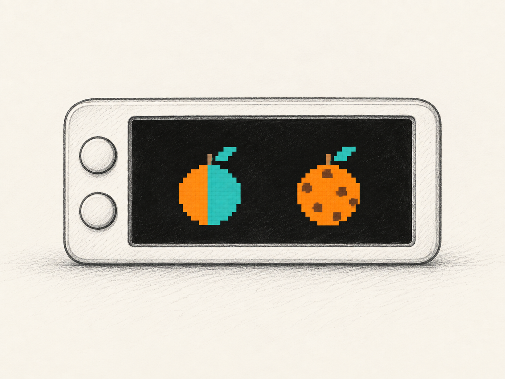
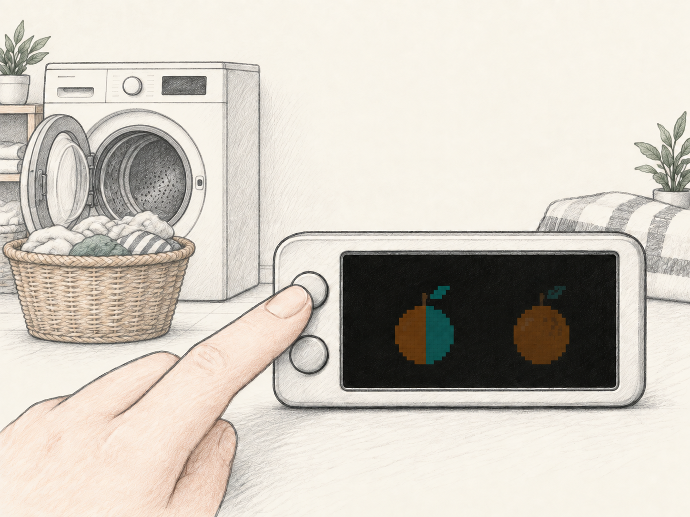
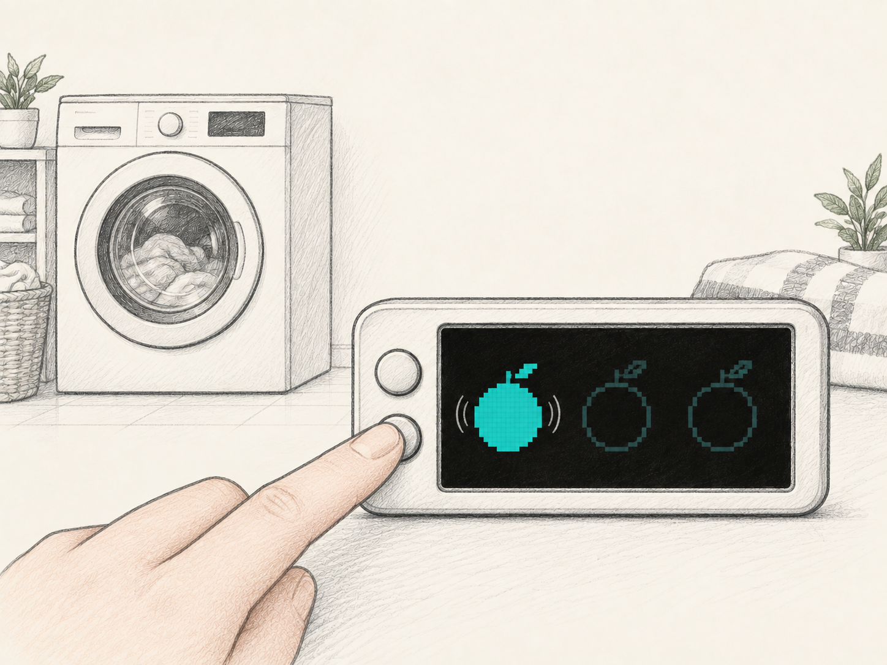
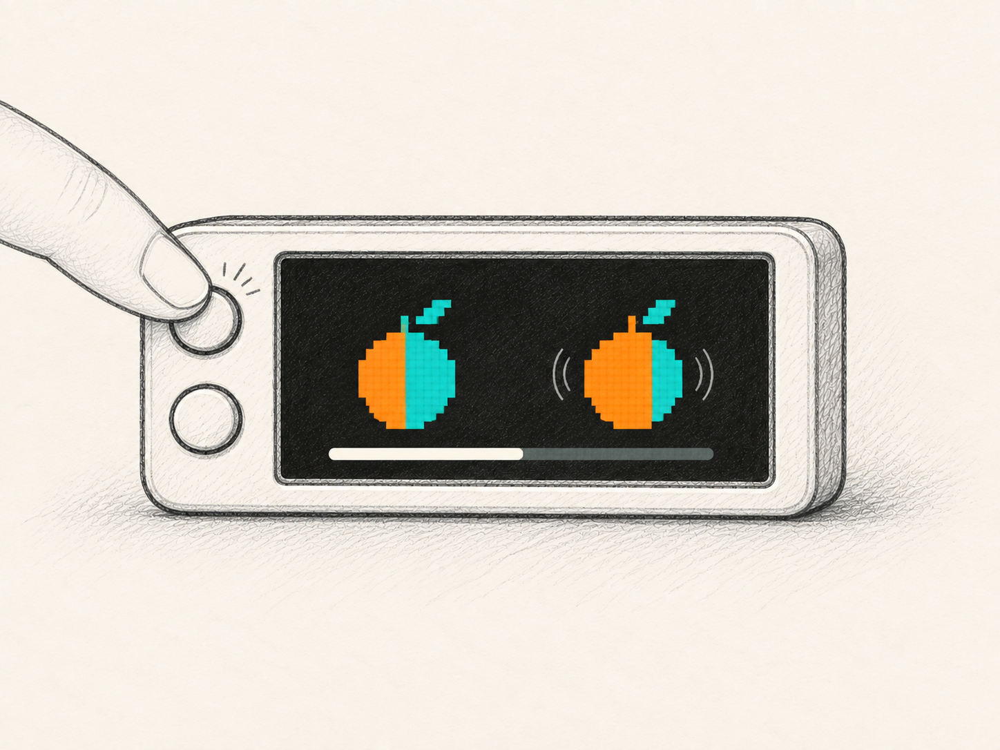
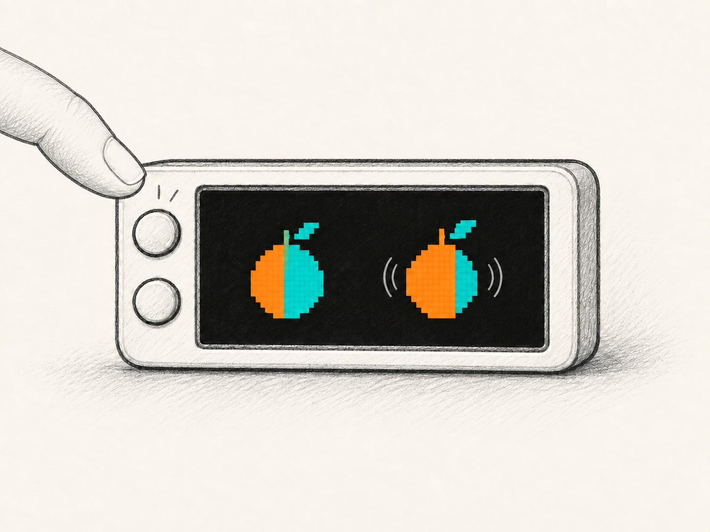
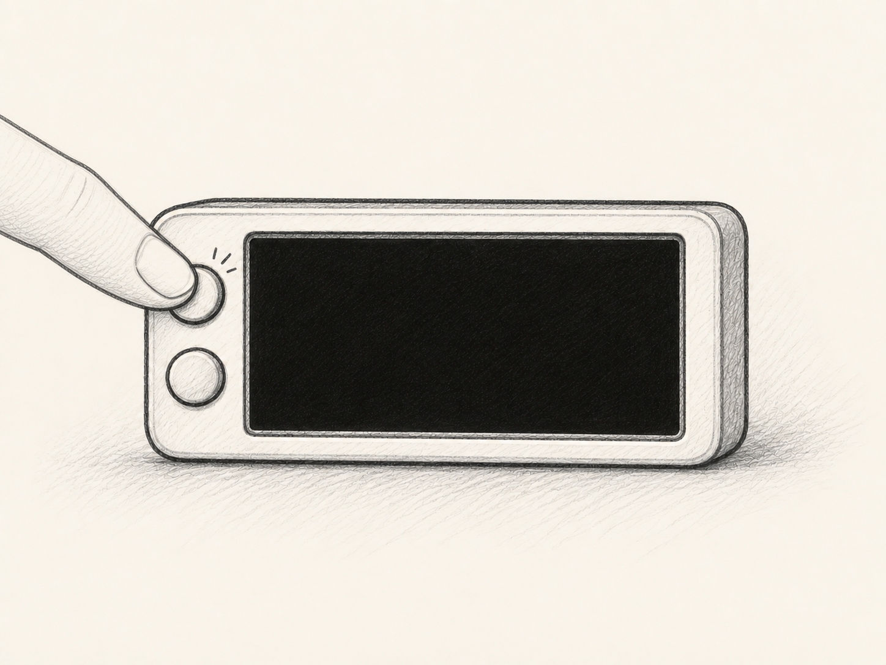

Orange. After the wash.
Wash · 38 minutes · Upper button A

01
02
03
04
05
06Next routine · Dry · 60 minutes · Lower button B

07Collect the wash.
Start the dryer.
Then begin a new round.
Optional branch · Cancel a running timer
Hold the initiating button

08Either · Release before 2 s

09Or · Keep holding to 2 s

10